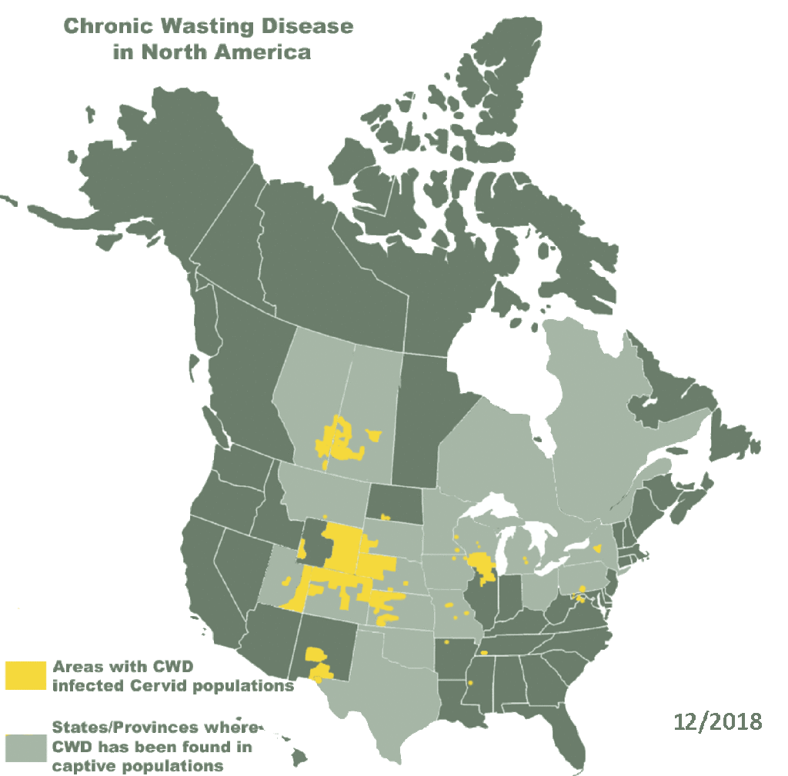

In Depth Analysis of CWD
☰ Menu
A History of CWD
Chronic Wasting Disease was first found from a captive mule deer in Fort Collins, Colorado in 1967 - more than 50 years ago. Research suggests it may have been around for closer to 60 years. Though it is unknown where CWD may have come from, this knowledge suggests the disease may have been derived from the TSE affecting sheep since 1947, scrapie. Captive deer in contact with sheep may have caused this transmission, or this TSE could have arosen spontaneously.Effects and Challenges
After an incubation period of up to more than a year in later stages of the disease, infected animals will show symptoms like erratic
behavior and emaciation. It is rare to see this in the wild, though, since in most cases these animals will have been killed by predators, hunters,
vehicles, etc. due to their mental and physical vulnerability. Transmission of CWD is possible during incubation, making management of this disease tricky
and eradication next to impossible. Postmortem examination of infected brains show spongiform lesions and accumulation of CWD prions, but testing of live
animals is more complicated, less reliable, and can cause harm to the animal. Prions can be extremely resistant in its environment, facilitated by elements
like soil, feed, and mineral licks. Human transmission of CWD is unlikely but remains a risky matter as laboratory experiments with macaque primates have
shown infected brain and muscle tissue transmit the disease.
Presence Around the World
Through surveillance and epidemiologic investigations, CWD has been detected in 112 herds in 17 US states, 109 herds in 4 Canadian provinces,
and cases among cervids in Norway, Finland, and Sweden. Free-ranging cervids with CWD have been found in around 30 US states. CWD data is formulated from
hunter-harvested animals and cervids with clinical signs, so expected cases should be much higher.


North American map of CWD spread.
Visitor Counter
William Wei
2021